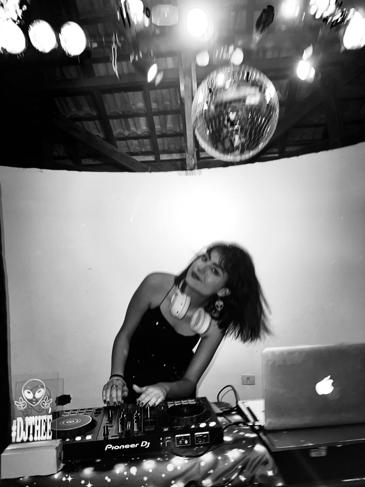
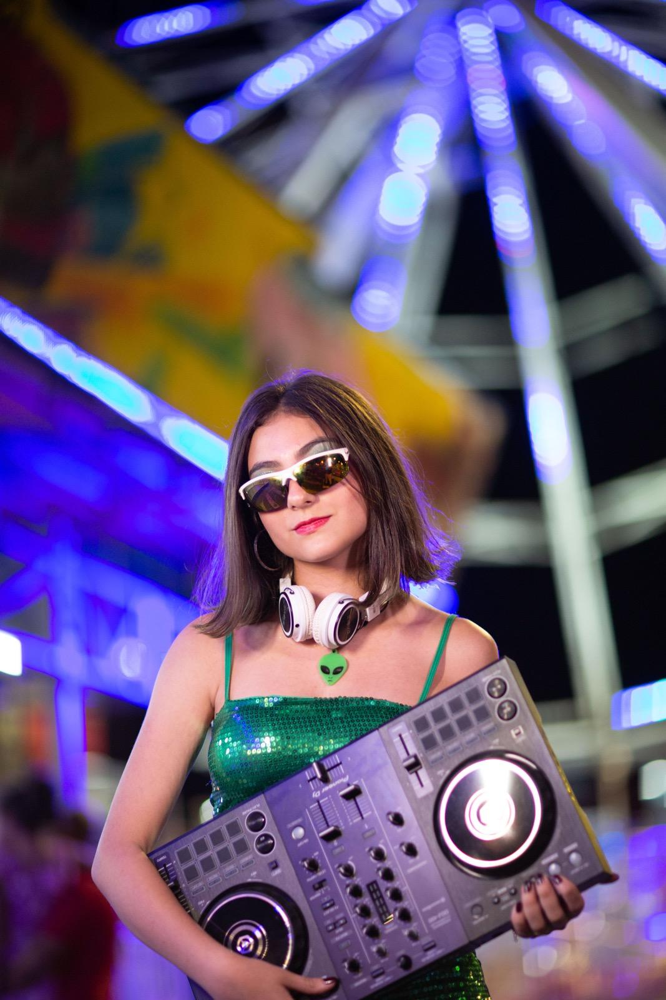
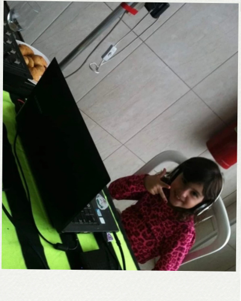
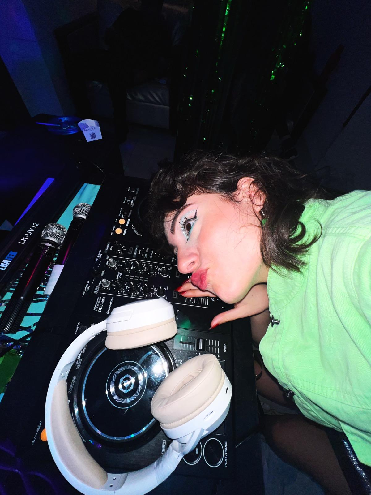

DJ THEÉ · Desenvolvedora · Multi-instrumentista
Cresci dentro das festas do meu pai, aprendi a sentir a música antes de qualquer coisa. Aí descobri que também amava codar e o Set dos DJs é exatamente onde essas duas partes de mim se encontram.

A música entrou na minha vida quando ainda era criança. Sou filha de DJ, cresci observando tudo e um dia simplesmente comecei a fazer também. Hoje é onde me sinto mais eu mesma.
Descobri que codar tem a mesma lógica de montar um set. Você vai encaixando as peças até fazer sentido. O Set dos DJs foi meu primeiro projeto individual (fico feliz com o meu resultado).
valores
Seja num set ou num código, não consigo fazer algo só por fazer precisa ter uma ideia por trás, uma vibe, alguma coisa minha ali dentro.
O que mais me move é quando a música ou o projeto toca alguém de verdade. Não quero só entregar quero que a pessoa sinta algo.
Música e tecnologia não são só o que eu faço são o que eu sou. Tudo que construo carrega isso de alguma forma.
momentos

meus 15 anos
o início (meus 5 anos)
no set